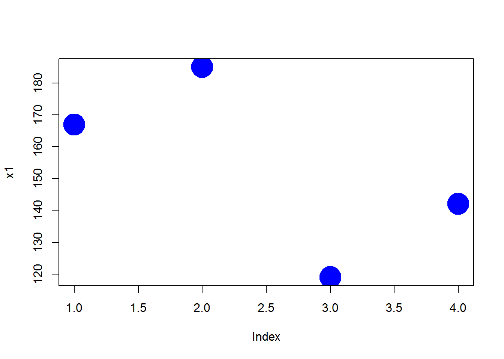
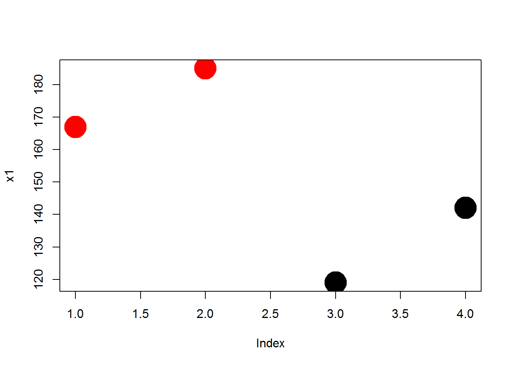
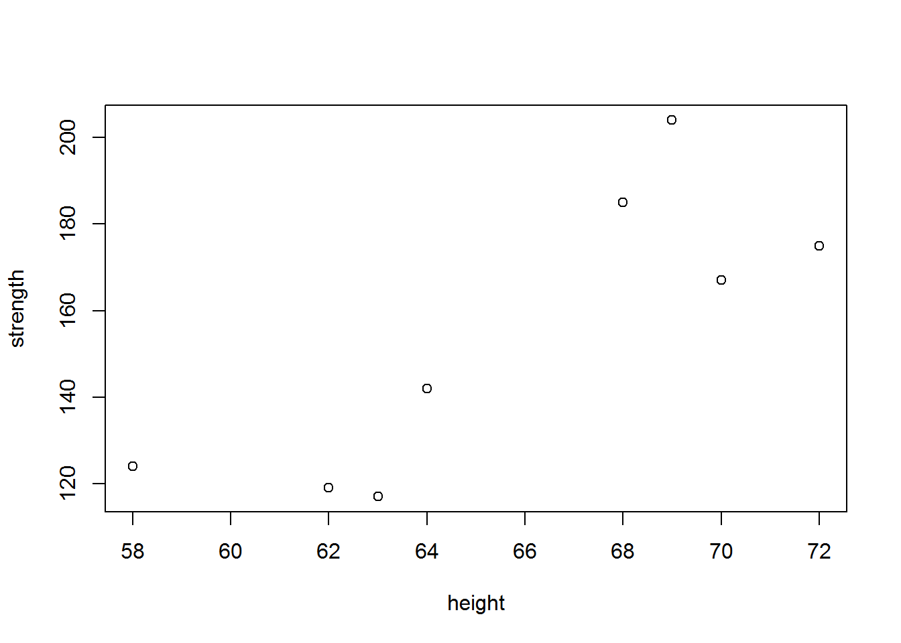
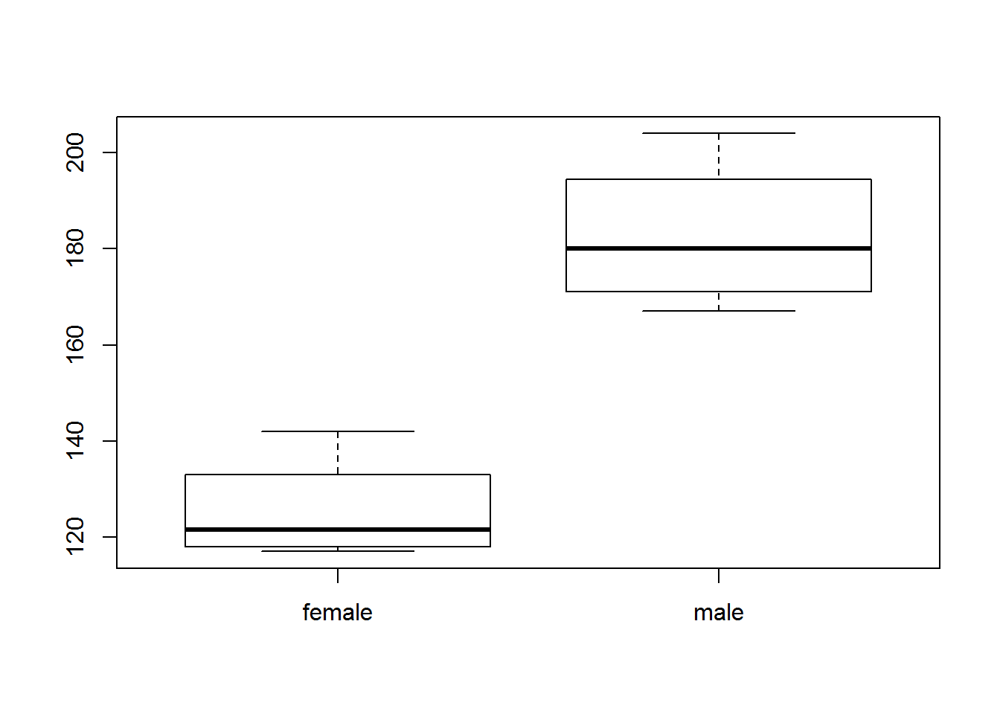
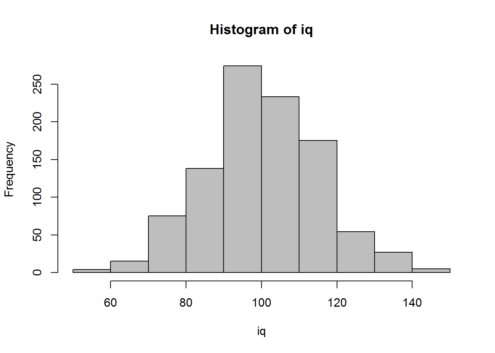
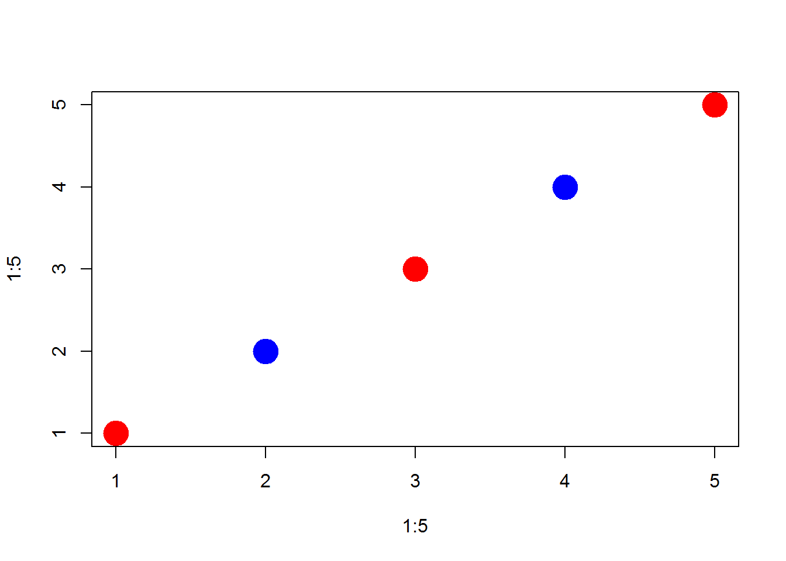

Vectors are the building blocks of data programming in R, so they are extremely important concepts.
Very loosely speaking a vector is a set of numbers or words. For example, [ 1, 2, 3] or [ apple, orange, pear ]. In social science, a vector is a variable in a dataset.
You will spend a lot of time creating data vectors, transforming variables, generating subsets, cleaning data, and adding new observations. These are all accomplished through operators (commands) that act on vectors.
There are four primary vector types (“classes”) in R:
| Class | Description |
|---|---|
| numeric | Typical variable of only numbers |
| character | A vector of letters or words, always enclosed with quotes |
| factor | Categories which represent groups, like treatment and control |
| logical | A vector of TRUE and FALSE to designate which observations fit a criteria |
Each vector or dataset has a “class” that tells R the data type.
These different vectors can be combined into three different types of datasets (data frames, matrices, and lists), which will be discussed below.
x1 <- c(167,185,119,142)
x1## [1] 167 185 119 142x2 <- c("adam","jamal","linda","sriti")
x2## [1] "adam" "jamal" "linda" "sriti"x3 <- factor( c("male","male","female","female") )
x3## [1] male male female female
## Levels: female malex4 <- c( "treatment","control","treatment","control" )
x4## [1] "treatment" "control" "treatment" "control"is.treat <- x4 == "treatment"
dat <- data.frame( name=x2, sex=x3, treat=x4, strength=x1 )
dat## name sex treat strength
## 1 adam male treatment 167
## 2 jamal male control 185
## 3 linda female treatment 119
## 4 sriti female control 142# R keeps track of the data type of each object
class( x1 )## [1] "numeric"class( x2 )## [1] "character"class( x3 )## [1] "factor"class( is.treat )## [1] "logical"class( dat )## [1] "data.frame"We often need to know how many elements belong to a vector, which we find with the length() function.
x1## [1] 167 185 119 142length( x1 )## [1] 4You can easily move from one data type to another by casting a specific type as another type:
x <- 1:5
x## [1] 1 2 3 4 5as.character(x)## [1] "1" "2" "3" "4" "5"y <- c(TRUE, FALSE, TRUE, TRUE, FALSE)
y## [1] TRUE FALSE TRUE TRUE FALSEas.numeric( y )## [1] 1 0 1 1 0as.character( y )## [1] "TRUE" "FALSE" "TRUE" "TRUE" "FALSE"But in some cases it might not make sense to cast one variable type as another.
z <- c("a", "b", "c")
z## [1] "a" "b" "c"as.numeric( z )## Warning: NAs introduced by coercion## [1] NA NA NACasting will often be induced when you try to combine different types of data. For example, when you add a character element to a numeric vector, the whole vector will be cast as a character vector.
x10 <- 1:5
x10## [1] 1 2 3 4 5x11 <- c( x10, "a")
x11## [1] "1" "2" "3" "4" "5" "a"When you read data in from outside sources, the input functions often will cast numeric vectors as factors if they contain a low number of elements. See the section on factors below for special instrucdtions on moving from factors to numeric vectors.
We often need to combine several elements into a single vector, or two vectors to form one. This is done using the c() function.
c(1,2,3)## [1] 1 2 3c("a","b","c")## [1] "a" "b" "c"x <- 1:5
y <- 10:15
z <- c(x,y)
z## [1] 1 2 3 4 5 10 11 12 13 14 15c(x,"a")## [1] "1" "2" "3" "4" "5" "a"Often times in programming we want to systematically expand a vector by appending new elements to the end. We do this with the combine function.
x <- 1
x## [1] 1for( i in 5:10 )
{
x <- c(x,i)
print(x)
}## [1] 1 5
## [1] 1 5 6
## [1] 1 5 6 7
## [1] 1 5 6 7 8
## [1] 1 5 6 7 8 9
## [1] 1 5 6 7 8 9 10There are some specific things to note about each vector type.
Math operators will only work on numeric vectors.
summary( x1 )## Min. 1st Qu. Median Mean 3rd Qu. Max.
## 119.0 136.2 154.5 153.2 171.5 185.0# if we run this, we get an error
# sum( x2 )
# Error in sum(x2) : invalid 'type' (character) of argumentThe integer vector is a special type of numeric vector. It is used to save memory since integers require less space than numbers that contain decimals points (you need to allocate space for the numbers to the left and the numbers to the right of the decimal). Google “computer memory allocation” is you are interested in the specifics.
If you are doing advanced programming you will be more sensitive to memory allocation and the speed of your code, but in the intro class we will not differentiate between the two types of number vectors. For all practical purposes they do the same thing.
n.vec <- 1:5
n.vec## [1] 1 2 3 4 5class( n.vec )## [1] "integer"n.vec[ 2 ] <- 2.01
n.vec## [1] 1.00 2.01 3.00 4.00 5.00class( n.vec )## [1] "numeric"The most important rule to remember with this data type: when creating character vectors, all text must be enclosed by quotation marks.
c( "a", "b", "c" ) # this works## [1] "a" "b" "c"# c( a, b, c ) # this doesn't work
# Error: object 'a' not foundWhen you type characters surrounded by quotes then R knows you are creating new text (“strings” in programming speak). When you type characters that are not surrounded by quotes, R thinks that you are looking for an object in the environment, like the variables we have already created. It gets confused when it doesn’t find the object that you typed.
In generate, you will use quotes when you are creating character vectors, and for arguments in functions. You do not use quotes when you are referencing an active object.
ls() # these are all of the active objects## [1] "dat" "i" "is.treat" "n.vec" "x" "x1"
## [7] "x10" "x11" "x2" "x3" "x4" "y"
## [13] "z""x1"## [1] "x1"x1## [1] 167 185 119 142plot( x1, col="blue", pch=19, cex=4 ) # text used for color argument, use quotes
# what if we want colors that represent groups in our data
plot( x1, col=x3, pch=19, cex=4 ) # object used for color argument, no quotes
Recall that x3 is the sex of study participants, so the different colors represent the different genders in the study.
Logical vectors are collections of a set of TRUE and FALSE statements.
Logical statements allow us to define groups based upon criteria, then decide whether observations belong to the group. See the section on operators below for a complete list of logical statements.
Logical vectors are important because organizing data into these sets is what drives all of the advanced data analytics (set theory is at the basis of mathematics and computer science).
dat## name sex treat strength
## 1 adam male treatment 167
## 2 jamal male control 185
## 3 linda female treatment 119
## 4 sriti female control 142dat$name == "sriti"## [1] FALSE FALSE FALSE TRUEdat$sex == "male"## [1] TRUE TRUE FALSE FALSEdat$strength > 180## [1] FALSE TRUE FALSE FALSETypically logical vectors are used in combination with subset operators to identify specific groups in the data.
dat## name sex treat strength
## 1 adam male treatment 167
## 2 jamal male control 185
## 3 linda female treatment 119
## 4 sriti female control 142# isolate data on all of the females in the dataset
dat[ dat$sex == "female" , ]## name sex treat strength
## 3 linda female treatment 119
## 4 sriti female control 142When defining logical vectors, you can use the abbreviated versions of T for TRUE and F for FALSE.
z1 <- c(T,T,F,T,F,F)
z1## [1] TRUE TRUE FALSE TRUE FALSE FALSENote how NAs affect complex logical statements:
TRUE & TRUE## [1] TRUETRUE & FALSE## [1] FALSETRUE & NA## [1] NAFALSE & NA## [1] FALSEIf one condition is TRUE, and another is NA, R does not want to throw out the data because the state of the missing value is unclear. As a result, it will preserve the observation, but it will replace all of the data with missing values:
dat## name sex treat strength
## 1 adam male treatment 167
## 2 jamal male control 185
## 3 linda female treatment 119
## 4 sriti female control 142keep.these <- c(T,F,NA,F)
dat[ keep.these , ]## name sex treat strength
## 1 adam male treatment 167
## NA <NA> <NA> <NA> NATo remove these rows, replace all NAs in your selector vector with FALSE:
keep.these[ is.na(keep.these) ] <- FALSE
dat[ keep.these , ]## name sex treat strength
## 1 adam male treatment 167When there are categorical variables within our data, or groups, then we use a special vector to keep track of these groups. We could just use numbers (1=female, 0=male) or characters (“male”,“female”), but factors are useful for two reasons.
First, it saves memory. Text is very “expensive” in terms of memory allocation and processing speed, so using simpler data structure makes R faster.
Second, when a variable is set as a factor, R recognizes that it represents a group and it can deploy object-oriented functionality. When you use a factor in analysis, R knows that you want to split the analysis up by groups.
height <- c( 70, 68, 62, 64, 72, 69, 58, 63 )
strength <- c(167,185,119,142,175,204,124,117)
sex <- factor( c("male","male","female","female","male","male","female","female" ) )
plot( height, strength ) # simple scatter plot
plot( sex, strength ) # box and whisker plot 
Factors are more memory efficient than character vectors because they store the underlying data as a numeric vector instead of a categorical (text) vector. Each group in the data is assigned a number, and when printing items the program only has to remember which group corresponds to which number:
sex## [1] male male female female male male female female
## Levels: female maleas.numeric( sex )## [1] 2 2 1 1 2 2 1 1# male = 2
# female = 1If you print a factor, the computer just replaces each category designation with its name (2 would be replaced with “male” in this example). These replacements can be done in real time without clogging the memory of your computer as they don’t need to be saved.
In some instances a categorical variable might be represented by numbers. For example, grades 9-12 for high school kids. The very important rule to remember with factors is you can’t move directly from the factor to numeric using the as.numeric() casting function. This will give you the underlying data structure, but will not give you the category names. To get these, you need the as.character casting function.
grades <- sample( x=9:12, size=10, replace=T )
grades## [1] 12 9 9 12 9 12 10 12 12 11grades <- as.factor( grades )
grades## [1] 12 9 9 12 9 12 10 12 12 11
## Levels: 9 10 11 12as.numeric( grades )## [1] 4 1 1 4 1 4 2 4 4 3as.character( grades )## [1] "12" "9" "9" "12" "9" "12" "10" "12" "12" "11"# to get back to the original numeric vector
as.numeric( as.character( grades ))## [1] 12 9 9 12 9 12 10 12 12 11Note that when subsetting a factor, it will retain all of the original levels, even when they are not in use.
In this example, there are 37 teams in the Lahman dataset (some of them defunct) and 16 teams in the National League in 2002. But after applying the year and league subsets you will still have 37 levels.
library( Lahman )
data( Salaries )
# there are only 16 teams in the NL in 2002
sals.2002 <- Salaries[ Salaries$yearID=="2002", ]
nl.sals <- sals.2002[ sals.2002$lgID == "NL", ]
levels( nl.sals$teamID )## [1] "ANA" "ARI" "ATL" "BAL" "BOS" "CAL" "CHA" "CHN" "CIN" "CLE" "COL"
## [12] "DET" "FLO" "HOU" "KCA" "LAA" "LAN" "MIA" "MIL" "MIN" "ML4" "MON"
## [23] "NYA" "NYN" "OAK" "PHI" "PIT" "SDN" "SEA" "SFN" "SLN" "TBA" "TEX"
## [34] "TOR" "WAS"After applying a subset, in order to remove the unused factor levels you need to apply either droplevels(), or else recast your factor as a new factor.
For example:
sals.2002 <- Salaries [Salaries$yearID=="2002", ]
nl.sals <- sals.2002 [ sals.2002$lgID == "NL",]
levels( nl.sals$teamID )## [1] "ANA" "ARI" "ATL" "BAL" "BOS" "CAL" "CHA" "CHN" "CIN" "CLE" "COL"
## [12] "DET" "FLO" "HOU" "KCA" "LAA" "LAN" "MIA" "MIL" "MIN" "ML4" "MON"
## [23] "NYA" "NYN" "OAK" "PHI" "PIT" "SDN" "SEA" "SFN" "SLN" "TBA" "TEX"
## [34] "TOR" "WAS"# fix in one of two equivalent ways:
#
# nl.sals$teamID <- droplevels( nl.sals$teamID )
# nl.sals$teamID <- factor( nl.sals$teamID )
levels( nl.sals$teamID )## [1] "ANA" "ARI" "ATL" "BAL" "BOS" "CAL" "CHA" "CHN" "CIN" "CLE" "COL"
## [12] "DET" "FLO" "HOU" "KCA" "LAA" "LAN" "MIA" "MIL" "MIN" "ML4" "MON"
## [23] "NYA" "NYN" "OAK" "PHI" "PIT" "SDN" "SEA" "SFN" "SLN" "TBA" "TEX"
## [34] "TOR" "WAS"nl.sals$teamID <- droplevels( nl.sals$teamID )
levels( nl.sals$teamID )## [1] "ARI" "ATL" "CHN" "CIN" "COL" "FLO" "HOU" "LAN" "MIL" "MON" "NYN"
## [12] "PHI" "PIT" "SDN" "SFN" "SLN"You will often need to generate vectors for data transformations or simulations. Here are the most common functions that will be helpful.
# repeat a number, or series of numbers
rep( x=9, times=5 )## [1] 9 9 9 9 9rep( x=c(5,7), times=5 )## [1] 5 7 5 7 5 7 5 7 5 7rep( x=c(5,7), each=5 )## [1] 5 5 5 5 5 7 7 7 7 7rep( x=c("treatment","control"), each=5 ) # also works to create categories## [1] "treatment" "treatment" "treatment" "treatment" "treatment"
## [6] "control" "control" "control" "control" "control"# create a sequence of numbers
seq( from=1, to=15, by=1 )## [1] 1 2 3 4 5 6 7 8 9 10 11 12 13 14 15seq( from=1, to=15, by=3 )## [1] 1 4 7 10 131:15 # shorthand if by=1## [1] 1 2 3 4 5 6 7 8 9 10 11 12 13 14 15# create a random sample
hat <- c("a","b","c","b","f")
sample( x=hat, size=3, replace=FALSE )## [1] "a" "f" "b"sample( x=hat, size=3, replace=FALSE )## [1] "b" "f" "b"sample( x=hat, size=3, replace=FALSE )## [1] "a" "c" "b"# for multiple samples use replacement
sample( x=hat, size=10, replace=TRUE )## [1] "b" "f" "b" "a" "c" "f" "b" "c" "f" "c"# create data that follows a normal curve
iq <- rnorm( n=1000, mean=100, sd=15 )
hist( iq, col="gray" )
Logical operators are the most basic type of data programming and the core of many types of data analysis. Most of the time we are not conducting fancy statistics, we just want to identify members of a group (print all of the females from the study), or describe things that belong to a subset of the data (compare the average price of houses with garages to houses without garages).
In order to accomplish these simple tasks we need to use logic statements. A logic statement answers the question, does an observation belong to a group.
Many times groups are simple. Show me all of the professions that make over $100k a year, for example.
Sometimes groups are complex. Identify the African American children from a specific zip code in Chicago that live in households with single mothers.
You will use nine basic logical operators:
| Operator | Description |
|---|---|
| < | less than |
| <= | less than or equal to |
| > | greater than |
| >= | greater than or equal to |
| == | exactly equal to |
| != | not equal to |
| x | y | x OR y |
| x & y | x AND y |
| ! | opposite of |
Logical operators create logical vectors, a vector that contains only TRUE or FALSE. The TRUE means that the observation belongs to the group, FALSE means it does not.
x1 <- c(7,9,1,2)
x2 <- c("male","male","female","female")
x3 <- c("treatment","control","treatment","control")
x1 > 7## [1] FALSE TRUE FALSE FALSEx1 >= 7## [1] TRUE TRUE FALSE FALSEx1 == 9## [1] FALSE TRUE FALSE FALSEx1 = 9 # don't use a single equals operator! it overwrites your variable
x1## [1] 9x1 <- c(7,9,1,2)
x1 == 9 | x1 == 1## [1] FALSE TRUE TRUE FALSE# x2 == male # this will not work because male is not enclosed with quotes
x2 == "female"## [1] FALSE FALSE TRUE TRUEx2 == "female" & x3 == "treatment"## [1] FALSE FALSE TRUE FALSENote that we use operators to create logical vectors where TRUE designates observation that belong to the defined group, and FALSE designates observations outside the group. We use these logical vectors in three ways:
x1## [1] 7 9 1 2x1 > 5## [1] TRUE TRUE FALSE FALSEkeep.these <- x1 > 5
x1[ keep.these ]## [1] 7 9# you can create a selector variable with one variable, and apply it to another
x2[ keep.these ] # sex of observations where x1 > 5## [1] "male" "male"We can apply a sum() function to a logical vector, and the result will be a tally of all of the TRUE cases.
# how many females do we have in our study?
sum( x2 == "female" )## [1] 2# how many females do we have in our treatment group?
sum( x2 == "female" & x3 == "treatment" )## [1] 1x7 <- c( "mole","mouse","shrew","mouse","rat","shrew")
# the lab assistant incorrectly identified the shrews
x7## [1] "mole" "mouse" "shrew" "mouse" "rat" "shrew"x7[ x7 == "shrew" ] <- "possum"
x7## [1] "mole" "mouse" "possum" "mouse" "rat" "possum"# we don't know if linda received the treatment
x3 <- c("adam","jamal","linda","sriti")
x4 <- c( "treatment","control","treatment","control")
x4[ x3 == "linda" ] <- NA
x4## [1] "treatment" "control" NA "control"The ! operator is a special case, where it is not used to define a new logical vector, but rather it swaps the values of an existing logical vector.
x1## [1] 7 9 1 2these <- x1 > 5
these## [1] TRUE TRUE FALSE FALSE! these## [1] FALSE FALSE TRUE TRUE! TRUE## [1] FALSE! FALSE## [1] TRUEWhen we combine multiple vectors together, we now have a dataset. There are three main types that we will use in this class.
| Class | Description |
|---|---|
| data frame | A typical data set comprised of several variables |
| matrix | A data set comprised of only numbers, used for matrix math |
| list | The grab bag of data structures - several vectors held together |
The most familiar spreadsheet-type data structure is called a data frame in R. It consists of rows, which represent observations, and columns, which represent variables.
data( USArrests )
head( USArrests )## Murder Assault UrbanPop Rape
## Alabama 13.2 236 58 21.2
## Alaska 10.0 263 48 44.5
## Arizona 8.1 294 80 31.0
## Arkansas 8.8 190 50 19.5
## California 9.0 276 91 40.6
## Colorado 7.9 204 78 38.7names( USArrests ) # variable names or column names## [1] "Murder" "Assault" "UrbanPop" "Rape"row.names( USArrests )## [1] "Alabama" "Alaska" "Arizona" "Arkansas"
## [5] "California" "Colorado" "Connecticut" "Delaware"
## [9] "Florida" "Georgia" "Hawaii" "Idaho"
## [13] "Illinois" "Indiana" "Iowa" "Kansas"
## [17] "Kentucky" "Louisiana" "Maine" "Maryland"
## [21] "Massachusetts" "Michigan" "Minnesota" "Mississippi"
## [25] "Missouri" "Montana" "Nebraska" "Nevada"
## [29] "New Hampshire" "New Jersey" "New Mexico" "New York"
## [33] "North Carolina" "North Dakota" "Ohio" "Oklahoma"
## [37] "Oregon" "Pennsylvania" "Rhode Island" "South Carolina"
## [41] "South Dakota" "Tennessee" "Texas" "Utah"
## [45] "Vermont" "Virginia" "Washington" "West Virginia"
## [49] "Wisconsin" "Wyoming"dim( USArrests ) # number of rows by number of columns## [1] 50 4A matrix is also a rectangular data object that consists of collections of vectors, but it is special in the sense that it only has numeric vectors and no variable names.
mat <- matrix( 1:20, nrow=5 )
mat## [,1] [,2] [,3] [,4]
## [1,] 1 6 11 16
## [2,] 2 7 12 17
## [3,] 3 8 13 18
## [4,] 4 9 14 19
## [5,] 5 10 15 20names( mat )## NULLdim( mat )## [1] 5 4as.data.frame( mat ) # creates variable names## V1 V2 V3 V4
## 1 1 6 11 16
## 2 2 7 12 17
## 3 3 8 13 18
## 4 4 9 14 19
## 5 5 10 15 20These are used almost exclusively for matrix algebra operations, which are fundamental to mathematical statistics. We will not use matrices in this course.
The list is the most flexible data structure. It is created by sticking a bunch of unrelated vectors or datasets together. For example, when you run a regression you generate a bunch of interesting information. This information is saved as a list.
x <- 1:100
y <- 2*x + rnorm( 100, 0, 10)
m.01 <- lm( y ~ x )
names( m.01 )## [1] "coefficients" "residuals" "effects" "rank"
## [5] "fitted.values" "assign" "qr" "df.residual"
## [9] "xlevels" "call" "terms" "model"m.01$coefficients## (Intercept) x
## -1.191003 2.034923m.01$residuals## 1 2 3 4 5
## 7.18262566 4.72595794 -10.15887696 -2.40025240 -16.15031923
## 6 7 8 9 10
## -2.82921251 1.79480450 -1.99897126 -6.99091683 14.79131479
## 11 12 13 14 15
## 5.02157956 4.51334953 11.83893806 2.21206879 -3.86271508
## 16 17 18 19 20
## -7.99079494 7.77861464 15.88438166 4.95188398 2.34910138
## 21 22 23 24 25
## 17.78584513 -10.49244397 11.29059096 -18.01330969 16.92825782
## 26 27 28 29 30
## 0.02773895 12.65980449 -13.29151816 0.94323889 -5.96870359
## 31 32 33 34 35
## -15.31063675 -11.45332767 7.08493648 -0.91015483 -9.19647807
## 36 37 38 39 40
## 11.24791365 -1.21240019 -24.59393673 4.67420003 -16.35233460
## 41 42 43 44 45
## 4.43355837 9.05527389 3.82022478 8.03039708 9.43988096
## 46 47 48 49 50
## -6.84267373 3.60505830 -6.50954244 -3.63789907 -5.51551328
## 51 52 53 54 55
## 3.78006114 -10.00037054 -5.36860821 -12.02458059 -8.18111597
## 56 57 58 59 60
## 0.22767725 -3.10304029 -3.77453748 24.02322934 5.78199757
## 61 62 63 64 65
## -2.31684085 10.49496938 1.09810381 5.51277622 -5.80103294
## 66 67 68 69 70
## 4.36969859 -10.69369520 -3.75802315 0.69331269 -1.11196779
## 71 72 73 74 75
## -0.09298119 4.00377044 -3.29753387 0.24655040 1.25320720
## 76 77 78 79 80
## 1.05298180 12.93883846 -7.37058855 -5.54129859 -21.31789651
## 81 82 83 84 85
## -4.55698376 4.83167325 0.16816889 -9.59076740 11.26245256
## 86 87 88 89 90
## 10.84979469 -2.52085543 -8.49207727 -6.25216669 3.35770500
## 91 92 93 94 95
## 12.49403740 0.23713266 -11.15703474 -7.22739727 14.69945646
## 96 97 98 99 100
## -16.41278555 -1.28050359 10.88765456 17.90236412 6.68846121m.01$call## lm(formula = y ~ x)These output are all related to the model we have run, so they are kept organized by the list so they can be used for various further steps like comparing models or checking for model fit.
A data frame is a bit more rigid that a list in that you cannot combine elements that do not have the same dimsions.
# new.dataframe <- data.frame( m.01$coefficients, m.01$residuals, m.01$call )
#
# these will fail because the vectors have different lengths The subset operators [ ] are one of the most common you will use in R.
The primary rule of subsets is to use a data operator to create a logical selector vector, and use that to generate subsets. Any observation that corresponds to TRUE will be retained, any observation that corresponds to FALSE will be dropped.
For vectors, you need to specify a single dimension.
x1 <- c(167,185,119,142)
x2 <- c("adam","jamal","linda","sriti")
x3 <- factor( c("male","male","female","female") )
x4 <- c( "treatment","control","treatment","control" )
dat <- data.frame( name=x2, sex=x3, treat=x4, strength=x1 )
these <- x1 > 140 # selector vector
these## [1] TRUE TRUE FALSE TRUEx1[ these ]## [1] 167 185 142x2[ these ]## [1] "adam" "jamal" "sriti"For data frames, you need two dimensions (rows and columns). The two dimensions are seperated by a comma, and if you leave one blank you will not drop anything.
# dat[ row position , column position ]
dat ## name sex treat strength
## 1 adam male treatment 167
## 2 jamal male control 185
## 3 linda female treatment 119
## 4 sriti female control 142these <- dat$treat == "treatment"
dat[ these , ] # all data in the treatment group## name sex treat strength
## 1 adam male treatment 167
## 3 linda female treatment 119dat[ , c("name","sex") ] # select two columns of data## name sex
## 1 adam male
## 2 jamal male
## 3 linda female
## 4 sriti female# to keep a subset as a separate dataset
dat.women <- dat[ dat$sex == "female" , ]
dat.women## name sex treat strength
## 3 linda female treatment 119
## 4 sriti female control 142Note the rules listed above about subsetting factors. After applying a subset, they will retain all of the original levels, even when they are not longer useful. You need to drop the unused levels if you would like them to be omitted from functions that use the factor levels for analysis.
df <- data.frame( letters=LETTERS[1:5], numbers=seq(1:5) )
levels( df$letters )## [1] "A" "B" "C" "D" "E"sub.df <- df[ 1:3, ]
sub.df$letters## [1] A B C
## Levels: A B C D Elevels( sub.df$letters )## [1] "A" "B" "C" "D" "E"droplevels( sub.df$letters )## [1] A B C
## Levels: A B Csub.df$letters <- droplevels( sub.df$letters )When we create a new variable from existing variables, it is called a ‘transformation’. This is very common in data science. Crime is measures by the number of assults per 100,000 people, for example (crime / pop). A batting average is the number of hits divided by the number of at bats.
In R, mathematical operations are vectorized, which means that operations are performed on the entire vector all at once. This makes transformations fast and easy.
x <- 1:10
x + 5## [1] 6 7 8 9 10 11 12 13 14 15x * 5## [1] 5 10 15 20 25 30 35 40 45 50R uses a convention called “recycling”, which means that it will re-use elements of a vector if necessary. In the example below the x vector has 10 elements, but the y vector only has 5 elements. When we run out of y, we just start over from the beginning. This is powerful in some instances, but can be dangerous in others if you don’t realize that that it is happening.
x <- 1:10
y <- 1:5
x + y## [1] 2 4 6 8 10 7 9 11 13 15x * y## [1] 1 4 9 16 25 6 14 24 36 50# the colors are recycled
plot( 1:5, 1:5, col=c("red","blue"), pch=19, cex=3 )
Here is an example of recycling gone wrong:
x1 <- c(167,185,119,142)
x2 <- c("adam","jamal","linda","sriti")
x3 <- c("male","male","female","female")
x4 <- c( "treatment","contro","treatment","control" )
dat <- data.frame( name=x2, sex=x3, treat=x4, strength=x1 )
# create a subset of data of all female study participants
dat$sex == "female"## [1] FALSE FALSE TRUE TRUEthese <- dat$sex == "female"
dat[ these, ] # correct subset## name sex treat strength
## 3 linda female treatment 119
## 4 sriti female control 142# same thing, but i mess is up - the female element is recycled in the overwrite
dat$sex = "female" # whoops just over-wrote my data! should be double equal
these <- dat$sex == "female"
dat[ these , ]## name sex treat strength
## 1 adam female treatment 167
## 2 jamal female contro 185
## 3 linda female treatment 119
## 4 sriti female control 142Missing values are coded differently in each data analysis program. SPSS uses a period, for example. In R, missing values are coded as “NA”.
The important thing to note is that R wants to make sure you know there are missing values if you are conducting analysis. As a result, it will give you the answer of “NA” when you try to do math with a vector that includes a missing value. You have to ask it explicitly to ignore the missing value.
x5 <- c( 1, 2, 3, 4 )
x5## [1] 1 2 3 4sum( x5 )## [1] 10mean( x5 )## [1] 2.5x5 <- c( 1, 2, NA, 4 )
x5## [1] 1 2 NA 4# should missing values be treated as zeros or dropped?
sum( x5 )## [1] NAmean( x5 )## [1] NAsum( x5, na.rm=T ) # na.rm=T argument drops missing values## [1] 7mean( x5, na.rm=T ) # na.rm=T argument drops missing values## [1] 2.333333You cannot use the == operator to identify missing values in a dataset. There is a special is.na() function to locate all of the missing values in a vector.
x5## [1] 1 2 NA 4x5 == NA # this does not do what you want## [1] NA NA NA NAis.na( x5 ) # much better## [1] FALSE FALSE TRUE FALSE! is.na( x5 ) # if you want to create a selector vector to drop missing values ## [1] TRUE TRUE FALSE TRUEx5[ ! is.na(x5) ]## [1] 1 2 4x5[ is.na(x5) ] <- 0 # replace missing values with zeroThis is a convenient function for making variable names easily accessible, but it is problematic because of:
scope
conflicting variable names
x <- 1:5
y <- 6:10
dat <- data.frame(x,y)
rm(x)
rm(y)
# I want to transform x in my dataset
attach( dat )
2*x## [1] 2 4 6 8 10x <- 2*x
detach( dat )
x## [1] 2 4 6 8 10dat # whoops! I didn't save my work in the dataset## x y
## 1 1 6
## 2 2 7
## 3 3 8
## 4 4 9
## 5 5 10In general, try not to use the attach() function.
Copyright © 201 Yourmom, Inc. All rights reserved.